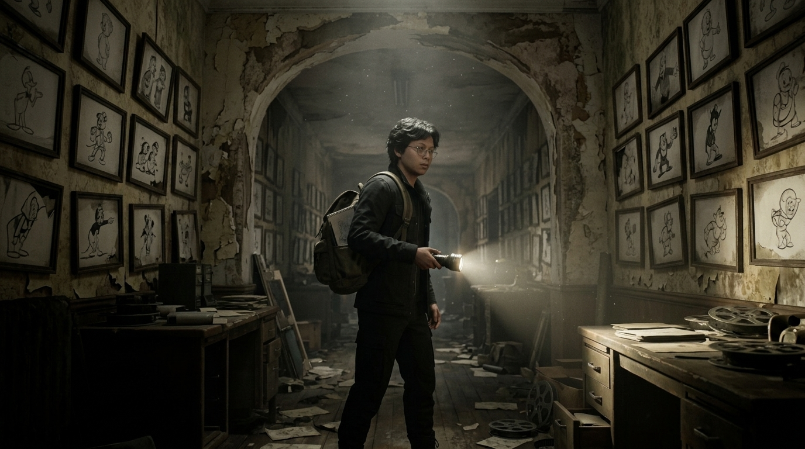
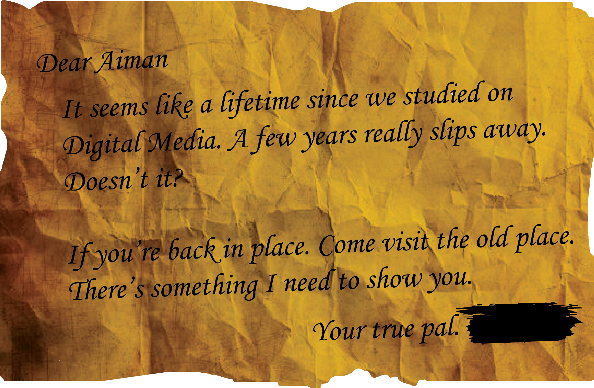

Living Illustrations
Cartoon drawings on the walls shift when you look away. Study every frame, because the studio is rewriting itself.
Drawn into an abandoned animation studio, a young Digital Media student discovers the dark secrets hidden behind its forgotten productions. What begins as an ordinary exploration soon turns into a nightmare when an old projector activates on its own, cartoon illustrations begin to change, and mysterious black ink spreads throughout the building.
As the studio grows increasingly distorted, a terrifying creature emerges from the darkness, its body formed from living ink and its wings fractured by digital pixels. Trapped inside a place where animation and reality begin to merge, the protagonist must uncover the truth behind the studio before becoming part of its unfinished creation.

Cartoon drawings on the walls shift when you look away. Study every frame, because the studio is rewriting itself.
Black ink creeps through corridors and floods rooms. Erase it, outrun it, or lose the way back.
A creature of living ink, its wings broken into drifting pixels, hunts by the static the projector leaves behind.

Be among the first to step inside the studio. Pre-order and get the exclusive Inkwell Edition digital artbook.